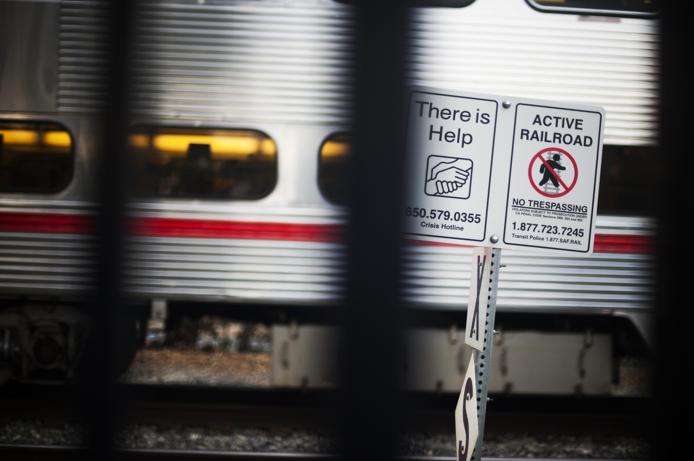
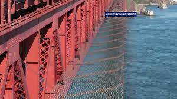

Definition
Point Clusters
According to the Suicide Prevention Resource Center (SPRC), point clusters are defined as suicides that are close in time and/or geography.
SCHOOLS, MEDIA, AND TRAINS
The Case of the Palo Alto High Schools
Photo by Brian L. FrankAmong two high schools Gunn High School and Palo Alto High School in Palo Alto, CA, the suicide rate is five times the national average, according to an investigative report by The Atlantic. In 2009, over the span of just nine months, four students from Gunn High School took their lives. Three of the four suicides were committed by throwing themselves in front of an oncoming Caltrain at the station that quite literally borders the schools. In a span of months, 42 Gunn High students were hospitalized or treated for “significant suicide ideation.”
Palo Alto’s high schools experienced these point clusters in 2002, 2009, and 2014, and this pattern is also known as echo clusters, in which clusters occur over an extended period after the initial cluster. The CDC has even been called in to investigate the nature of suicide clusters in Palo Alto. A majority of these suicides have been attributed to academic pressure and stress, given that the schools are located right next to Stanford University, and these high schools are consistently ranked among the nation’s best.
While the major cause of point clusters in Palo Alto’s high schools is due to academic pressure, a large part of it is also the way in which the news of deaths were publicized, and the speedy transmission of information over social media. In fact, The Atlantic notes that a major difference between the point cluster in 2002 versus 2009 was the fact that the news spread across the school and across social circles so rampantly via Facebook and Twitter in 2009. In addition, the fact that so many copycat suicides occured at the exact same Caltrain station suggests that much needs to be done at the train stations to prevent further suicides. For example, signs have been placed beside the train tracks indicating suicide hotlines, but more can be done, such as monitoring of the tracks by the city, especially in the wake of a new point cluster.
According to the National Association of School Psychologists, there have been several instances of point clusters within high schools across the U.S. including:| City | Year |
|---|---|
| Palo Alto, CA | 2002, 2009, 2017 |
| Fairfax County, Virgina | 2014 |
| Colorado Springs, Colorado | 2017 |
| Salt Lake City, Utah | 2018 |
HOTSPOTS
The Golden Gate Bridge
Photo of projected suicide barrier on Golden Gate from ABC NewsThe Golden Gate Bridge in San Francisco, CA is known to be a popular destination for suicide. It would seem that it is the location of a point cluster. Yet, the Centre for Suicide Prevention, in a statistical study analyzing the 224 suicides between 1999-2009, found no evidence of clustering at the Golden Gate. And yet, according to the San Francisco Chronicle, a person jumps off the bridge around every two weeks, and that is one life that could have been saved every two weeks. The Golden Gate is no doubt a point cluster.
In the case of Kyle Gamboa, an 18 year-old boy, it was later found on his device that he Googled the Golden Gate Bridge and found a YouTube video that depicted the beautiful, breathtaking bridge, and people jumping off it. Within hours, he too, jumped off the bridge. This, then, is yet another instance of the power of social media in influencing suicide.
According to survivors, many immediately regretted it the second they jumped off the Golden Gate. Moreover, given that suicide is often impulsive according to the CDC, a suicide barrier net could have prevented deaths in those who have regretted it and who have acted impulsively when they otherwise might not have taken their own life. However, while a net has been issued to be built in 2019, construction has since been delayed to 2021, which will only then be completed in 2023.
WHAT CAN I DO TO HELP?
- Write to the City of San Francisco to demand that they prioritize the expedition of building a safety barrier for society.
- If a train station near you does not have signposts with suicide hotlines or indications that "There is help", contact the train station and your city to install signs.